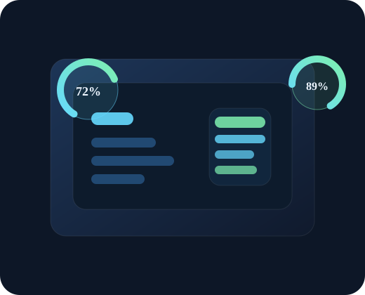

Performans boost
Uygulama başlatma süresi ve geçiş hızı iyileştirilir.
Fiziksel RAM artırma mümkün değildir. Ancak gereksiz uygulamaları kapatmak, arka plan yükünü düşürmek, önbelleği temizlemek, animasyonları azaltmak ve sistem ayarlarını optimize etmek ile cihazınız daha hızlı, daha hafif ve daha verimli çalışır.
Fiziksel RAM artışı değil; kıymetli kaynak yönetimi ve optimizasyon.
Uygulama başlatma süresi ve geçiş hızı iyileştirilir.
Önbellek, gereksiz dosya ve arka plan yükü azaltılır.
Animasyon, arka plan ve sistem davranışı daha verimli hale gelir.

Yüksek tüketen uygulamalar görünür ve yönetilir.
Sistem, gereksiz arka plan yükünü azaltır, hafıza baskısını düşürür ve cihazın genel algılanan hızın�� artırır.
Her cihaz için özel optimizasyon yaklaşımı uygulanır.
adb shell settings put global transition_animation_scale 0 adb shell settings put global window_animation_scale 0 adb shell settings put global animator_duration_scale 0 adb shell pm trim-caches 10000 adb shell am force-stop com.google.android.apps.messaging adb shell am force-stop com.android.vending
adb shell pm uninstall --user 0 com.samsung.android.app.watchmanager adb shell pm uninstall --user 0 com.samsung.android.app.routines adb shell pm uninstall --user 0 com.sec.android.app.popupcalculator
adb shell dumpsys meminfo com.android.systemui adb shell dumpsys activity activities | findstr "mResumed" adb shell top -n 1
Ayarlar > Genel > Arka Plan Uygulama Yenilenmesi > Kapat Ayarlar > Pil > Düşük Güç Modu > Aç Ayarlar > Genel > iPhone Depolama > Gereksiz uygulamaları sil
Ayarlar > Genel > iPhone Depolama - gereksiz oyunlar sil - büyük dosyalar buluta aktar - videolar ve fotoğraflar temizle
Ayarlar > Genel > Hızlandırılmış Uygulama Geliştirme > Kapalı Ayarlar > Genel > Yenileme > Kapat Ayarlar > Pil > Oto-Lock > Kısa
adb shell settings put global transition_animation_scale 0 adb shell settings put global window_animation_scale 0 adb shell settings put global animator_duration_scale 0 adb shell pm trim-caches 12000 adb shell am force-stop com.miui.miservice adb shell am force-stop com.miui.securitycenter
Ayarlar > Uygulamalar > Uygulama Yöneticisi - gereksiz uygulamalar > duraklat - otomatik başlatma > kapat - arka plan kullanım > kısıtla
Sonuç: - sistem daha akıcı çalışır - uygulama başlatma süresi azalır - hafıza serbestleşir - arka plan yükü düşer
adb shell settings put global transition_animation_scale 0 adb shell settings put global window_animation_scale 0 adb shell settings put global animator_duration_scale 0 adb shell pm trim-caches 8000
Ayarlar > Uygulamalar > Uygulama Yöneticisi - gereksiz uygulamalar kapat - otomatik başlatma ve arka plan izinleri kısıtla
- gereksiz dosyaları temizle - büyük fotoğraf/video dosyalarını buluta aktar - sık kullanılan uygulamaları ön plana al
En etkili teknik komutları kısa ve anlaşılır şekilde kategorilere ayırdık.
Gözle görülebilir iyileşme ve daha sağlam kullanım deneyimi.
| Cihaz | Yöntem | Beklenen Sonuç | Durum |
|---|---|---|---|
| Samsung | ADB animasyon kapatma + önbellek temizleme + arka plan kapatma | Akıcılık artar, RAM baskısı azalır | Başarılı |
| iPhone | Arka plan yenileme kapatma + depolama temizliği + pil ayarları | Daha hafif ve daha akıcı sistem | Başarılı |
| Redmi | ADB + arka plan kısıtlaması + otomatik başlatma kapatma | Performans artışı ve daha az kaynak tüketimi | Başarılı |
| Diğer Android | Animasyon düşürme + gereksiz uygulama kontrolü | RAM kullanılabilirliği iyileşir | Etkili |
İnsanlar yaptıkları ayarlama sonrası ne hissetti?
“Samsung cihazımda animasyonları düşürmek çok iyi geldi. Uygulamaların açılışı daha hızlı oldu.”
“Redmi cihazımda arka plan uygulamalarını kısıtladım. İşlemcinin yükü azaldı ve cihaz çok daha hafif hissettiriyor.”
“iPhone’umda depolama temizliği yaptıktan sonra hem kullanım akışı hem de pil performansı iyileşti.”
Fiziksel olarak hayır. Ama kullanılabilir bellek boşaltılarak cihaz daha hızlı çalıştırılabilir.
Evet, ama yalnızca bilinçli ve kontrollü şekilde uygulanmalıdır. Özellikle sistem servisleri kapatılırken dikkatli olunmalıdır.
Fiziksel olarak hayır. Fakat arka plan yenileme kapatma, depolama temizliği ve ayar optimizasyonu performansı iyileştirir.
Arka plan kısıtlaması, otomatik başlatma kapatma ve animasyon düşürme bir arada kullanıldığında en iyi sonuç alınır.
Önceki yükün azaltılmasıyla uygulama açılışları daha hızlı olur. Özellikle animasyonların kapatılması belirgin fark yaratır.
Kısa vadede anında fark hissedilir. Uzun vadede veri ve sistem temizliği düzenli yapıldığında daha kalıcı etkiler görülür.